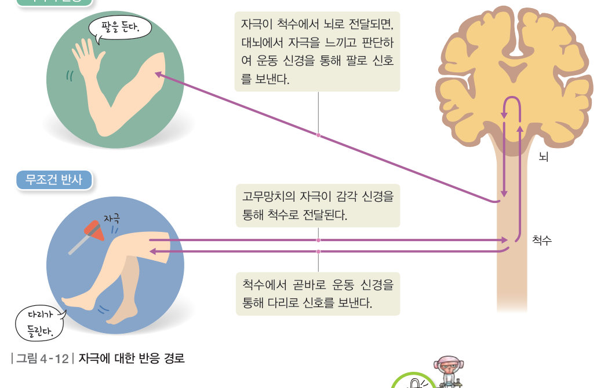
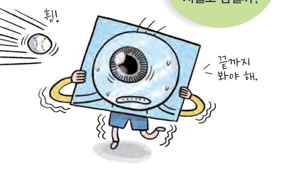
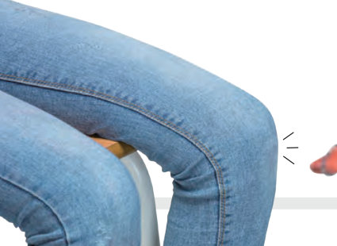

공이 갑자기 날아오면 왜 눈이 저절로 감길까? 무릎 반사 탐구를 느린 화면으로 분석해 무조건 반사와 의식적 반응의 경로와 빠르기를 비교해 보자.
날아오는 공을 보고 야구 방망이를 휘두르는 것은 자신의 의지에 따라 일어나는 반응이다. 하지만 공이 갑자기 눈앞으로 날아올 때에는 자신의 의지와 관계없이 눈이 감긴다. 두 반응은 모두 신경계를 통해 자극이 전달되어 일어난다.

| (가) 무조건 반사: 자극 수용 → 감각 신경 → 척수 → ( ) → 반응 기관 | |
| (나) 의식적 반응: 자극 수용 → 감각 신경 → 척수 → ( ) → 척수 → 운동 신경 → 반응 기관 |
| 평가 기준 | 스스로 평가 |
|---|---|
| 탐구 기능 반응의 빠르기에 차이가 나는 까닭을 옳게 설명하였는가? | |
| 탐구 기능 자신의 의견을 논리적으로 전달하였는가? | |
| 인성 친구의 의견에 귀를 기울였는가? |
고무망치로 무릎뼈 아래를 치면 자극이 감각 신경을 통해 척수로 전달된 다음, 척수에서 바로 운동 신경을 통해 다리 근육으로 신호를 보내 자신도 모르게 다리가 들린다. 또, 자극이 감각 신경을 통해 척수를 거쳐 대뇌로 전달된 다음, 대뇌에서 자극을 느끼고 판단하여 운동 신경을 통해 팔 근육으로 신호를 보내 의식적으로 팔을 든다.
대뇌의 판단 과정을 거쳐 자신의 의지에 따라 일어나는 반응을 의식적 반응이라고 한다. 이와 달리 대뇌의 판단 과정을 거치지 않아 자신의 의지와 관계없이 일어나는 반응을 무조건 반사라고 한다. 무조건 반사는 매우 빠르게 일어나기 때문에 위험한 상황에서 우리 몸을 보호하는 데 중요한 역할을 한다. 무조건 반사는 척수 외에 연수나 중간뇌가 중추로 작용하여 일어나기도 한다.
신경계를 구성하는 뉴런 내부에서는 자극이 전기 신호로 전달된다. 이를 이용하여 뇌의 명령을 로봇이 받아들일 수 있는 전기 신호로 바꾸어 전달하면 뇌파로 로봇을 작동할 수 있다. 현재 뇌와 컴퓨터를 연결하는 기술은 팔다리를 움직일 수 없는 사람이 뇌파를 이용해 컴퓨터로 문서를 작성할 수 있을 만큼 발달하였다.
| ⑴ 날아오는 공을 보고 손을 뻗어 잡았다. | |
| ⑵ 송곳에 손바닥이 닿아 자신도 모르게 팔을 움츠렸다. | |
| ⑶ 휴대 전화에서 나는 소리를 듣고 팔을 뻗어 확인했다. | |
| ⑷ 어두운 방에서 조명을 켜서 밝게 했더니 동공이 작아졌다. |
| ⑴ 투수가 던진 공을 보고 야구 방망이를 휘두른다. | |
| ⑵ 무릎뼈 바로 아래에 충격을 받자 다리가 저절로 들린다. | |
| ⑶ 뾰족한 물체가 손가락에 닿으면 자신도 모르게 팔을 움츠린다. |
| 평가 기준 | 스스로 평가 |
|---|---|
| 신경계를 통해 일어나는 자극에 대한 반응 경로를 설명할 수 있다. | |
| 자극에 대한 반응의 종류를 설명할 수 있다. |